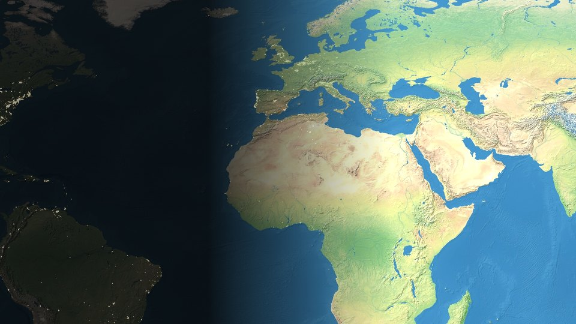
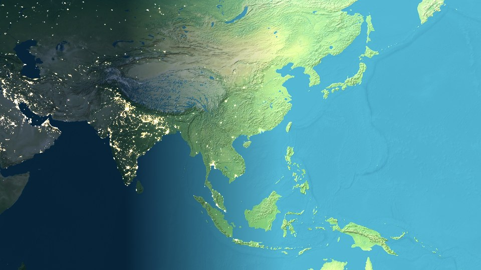
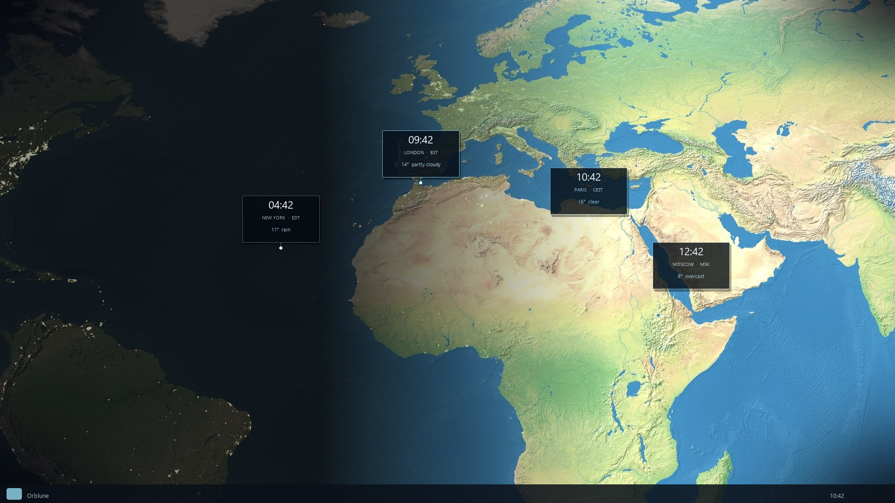

Orblune
Best live Earth wallpaper for Windows
Real sun day/night, world clocks, and weather — a calm desktop background that moves with Earth.
Windows 10 & 11 · current-user install · no admin
What it is
A live Earth wallpaper with live Earth time.
Looking for the best live Earth wallpaper, the best Windows wallpaper that actually moves with the sun, or the best desktop background with world clocks? Orblune is built for that.
Most “best wallpaper” lists are still static photos. Orblune is a live Earth wallpaper: the terminator follows the real sun, night shows city lights, and city cards show live Earth time across time zones — with optional weather on the pins.
Free for Windows 10 & 11 (current-user, no admin). One screen or multi-monitor. Premium unlocks more cities, weather, and map themes — without noisy widgets.
Best live Earth wallpaper Best desktop background Day & night from the real sun World clock pins Multi-monitor
Looks
Ten map themes
Premium moods from one Natural Earth base — pick a look, or a different one on each monitor.



Quiet power
Built to stay out of the way
Wallpaper that updates with the sun — not another noisy widget layer.
-
01
Day and night
Terminator follows the real sun. City lights bloom after dusk.
-
02
Times that pin
Home city plus world clocks, locked to the map — not floating chrome.
-
03
Weather, quietly
MET Norway forecasts on the cards that matter. Refresh without layout jump.
-
04
Multi-monitor
Enable displays independently. Premium can set a theme per screen.
Questions
FAQ
Short answers for people hunting a live Earth or world-clock wallpaper on Windows.
What is the best live Earth wallpaper for Windows?
If you want the best live Earth wallpaper for Windows with real sun day/night, world clocks, and weather on the map — not a static JPEG — Orblune is aimed at that. Download it free for Windows 10/11 and decide for yourself.
What is the best desktop background for a live Earth map?
The best desktop background for live Earth updates with the sun and shows city times. Orblune keeps that map under your icons as a quiet Windows wallpaper.
What is the best live wallpaper for Windows 11 with world clocks?
Orblune runs on Windows 11 with world clock pins and optional weather. Use Download for Windows on this page — current-user install, no admin.
Does it show live Earth time and world clocks?
Yes. City cards pin local time on the live Earth map so you can glance at live Earth time across zones. Weather can sit on those same cards.
Is the day/night lighting real?
Yes. This day and night wallpaper uses real solar position, so sunlight and city lights move as Earth turns.
Will it work as a multi-monitor live wallpaper?
Yes. Enable Orblune per display. Premium can assign a different map theme to each monitor.
How do I download it for Windows 10 or 11?
Use Download for Windows on this page. Setup installs for the current user — no admin prompt — then Orblune opens from the system tray.
Orblune
Install in one click
Grab the latest setup for this live Earth wallpaper on Windows — double-click, then find Orblune in the system tray.
Free tier included · Premium is a one-time unlock